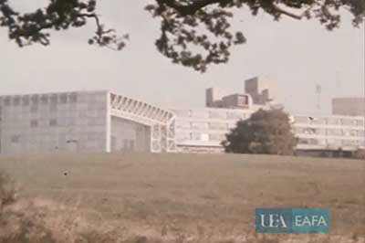
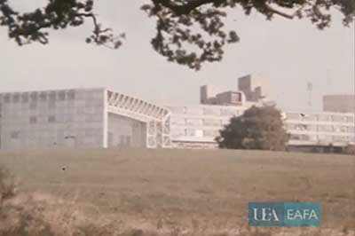

Education / Portal / The Building
Designed between 1974 and 1976 and opened in 1978, the Sainsbury Centre for Visual Arts was Norman Foster’s first major public building. He was approached by Sir Robert and Lady Sainsbury to design an appropriate building to house both the collection which they had gifted to the University in 1973 and the School of Fine Art (now the School of World Art Studies and Museology).
Exploring the Architecture – pack » Object in Focus – leaflet »
Foster + Partners – website »
The Gift (1979) – film »
Object in Focus – leaflet »
Foster + Partners – website »
The Gift (1979) – film »